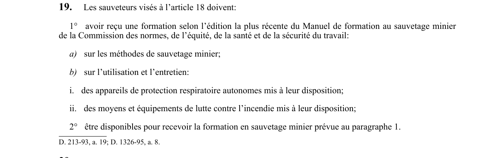

art-19-RSSM : formation contenu sauveteurs miniers
Un article du wiki ⚖️ Recueil législatif
En bref
Les sauveteurs visés à l'article 18 doivent avoir reçu une formation conforme à l'édition la plus récente du Manuel de formation au sauvetage minier. Il s'agit d'une obligation.
- Portant sur les méthodes de sauvetage minier.
- Formation selon édition la plus récente du Manuel de formation au sauvetage minier CNESST.
🌐 LegisQuébec · 📄 PDF officiel
Texte officiel : capture du PDF
{kind=link}

Toucher l'image pour l'agrandir🔗 Voir art. 19 RSSM dans le PDF (page 13)
Version : texte officiel du RSSM (RLRQ c. S-2.1, r. 14), à jour au 1er mai 2024 — Éditeur officiel du Québec
Voir aussi
- art. 17 : équipement minimal de sauvetage · obligation : toute mine souterraine en activité doit être équipée d'au moins 6 appareils de protection respiratoire autonomes autosauveteurs à oxygène d'une durée minimale de 60 minutes, d'un appareil à lecture directe pour l'évaluation des gaz (CO, NO₂, O₂, gaz combustibles).
- art. 18 : effectifs équipes sauvetage minier · obligation : le sauvetage minier doit être assuré par des équipes dont le nombre de sauveteurs varie de 6 (pour 50 travailleurs ou moins) à 21 (pour 250 travailleurs et plus), plus 3 sauveteurs substituts.
- art. 20 : formation sauvetage petite équipe · obligation : lorsqu'il y a moins de 6 travailleurs, ceux-ci doivent recevoir une formation sur l'utilisation des appareils respiratoires autonomes d'au moins 60 minutes, d'un appareil d'oxygénothérapie et d'un détecteur de gaz ; de plus.
- art. 21 : civière couverture salles refuge · obligation : toute mine doit être pourvue d'au moins une civière et une couverture dans chaque salle de refuge et dans chaque salle à manger située à la surface.
- ⚖️ Loi habilitante : LSST
- ↑ Index du bloc : Aménagement du chantier
Pages qui pointent ici (5)
- art-17-RSSM : équipement minimal de sauvetage Recueil législatif
- art-18-RSSM : effectifs équipes sauvetage minier Recueil législatif
- art-20-RSSM : formation sauvetage petite équipe Recueil législatif
- art-21-RSSM : civière couverture salles refuge Recueil législatif
- RSSM : Aménagement du chantier (art. 12 à 99) Recueil législatif